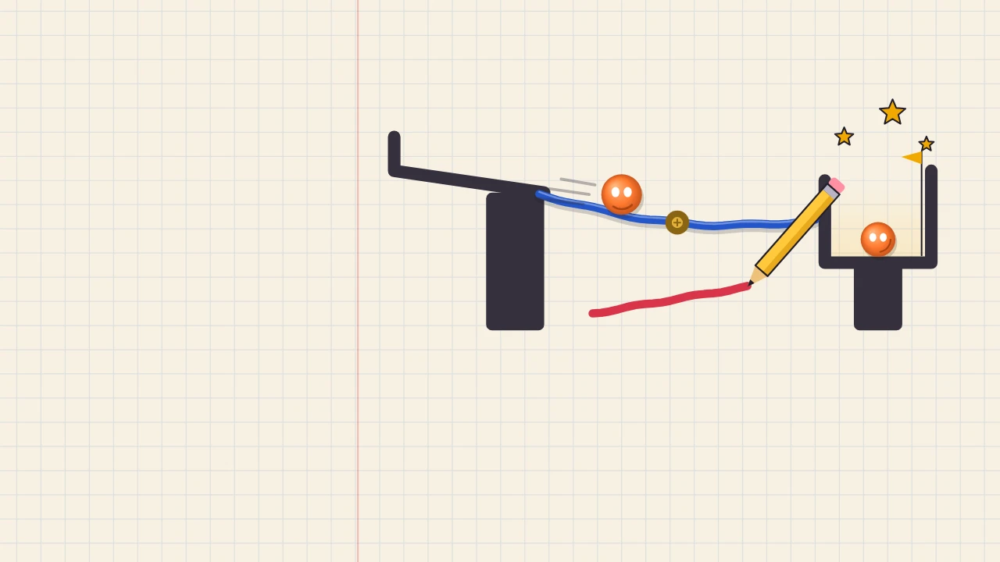

Hexan.js — FPSA subscription is required to play. Subscribe to play
No downloads or plugins. Direct browser execution.Wobbline
Draw lines that become real objects. Bridge gaps, shelter a critter, topple blocks and solve 64 physics puzzles plus a new daily puzzle.
Wobbline is a physics puzzle game where everything you draw becomes real. Drag a line and it turns into a solid, wobbly object with weight. Press Go and watch it fall, roll, tip and land, then see whether your idea works.
Every puzzle has more than one answer. Lay a bridge across a gap so the ball rolls into the cup. Build a roof over the posts before the rocks fall on the critter. Knock over a wooden block, or get two balls to meet in the middle. A new idea arrives every five levels. Gold pins turn a line into a hinge, or lock it solid if it crosses two. Pink pads bounce, blue ice is slippery for balls and lines alike, and striped zones refuse ink. Cups slide back and forth, wind pushes everything around, some levels have a crowd of balls, and in others gravity points up.
Stars reward clever, tidy solutions. One star is for solving the puzzle, the second for staying under the ink target and the third for using few lines. The goal card shows each target before you start. The HUD shows an ink meter with a gold star tick and your line count. The results screen tells you exactly which star you earned or missed and why. If something doesn't work, Retry keeps your lines so you can nudge them and go again instantly.
The Daily Puzzle is the same for everyone on the same date, with a streak for solving it every day. Share your result as an image of your actual solution, with a challenge link that shows a friend how much ink you used. Stuck? Watch a short ad to see a ghost solution. Stars unlock new inks: Red Marker, Gel Green, Crayon Grape, Fountain Pen and Rainbow. Works with fingers, mouse and Apple Pencil, offline, and saves on your device.